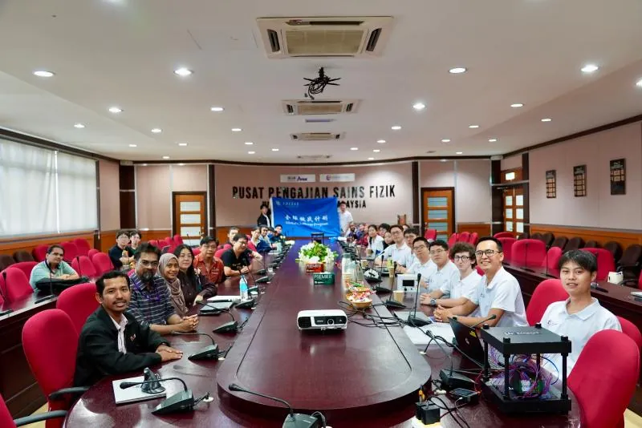
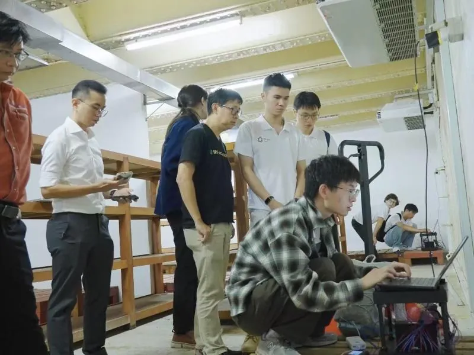
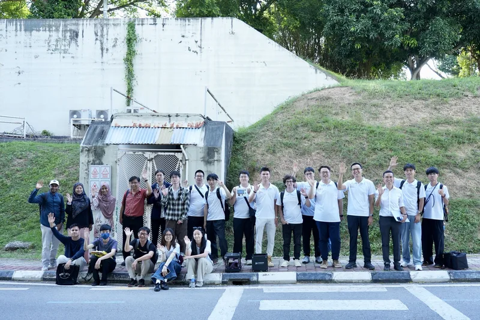

On the afternoon of 5 August, the team visited the School of Physics at Universiti Sains Malaysia (USM) in Penang for an academic exchange, a field demonstration and data taking. The school is strong in geophysics, remote sensing and environmental monitoring, which complement muon imaging naturally. Deputy deans Assoc. Prof. Ahmad Fairuz Omar and Assoc. Prof. Mohd Mahadi Halim, Assoc. Prof. Yoon Tiem Leong, Assoc. Prof. Lim Hwee San and staff and students took part, with Dr Teoh Ying Jia chairing.


Mohd Mahadi Halim introduced the school’s structure, research groups, field projects and applications. Kim Siang Khaw presented the SJTU muon group’s expertise and results, with a focus on muon imaging. Both sides agreed that muography offers ground for joint research on underground structures and geological surveys, and plan to work together on site surveys, data sharing and projects. Peiyao Li, a graduate student in the School of Naval Architecture, Ocean and Civil Engineering, spoke about using muon surveys and calculations for geohazard prevention, and Yinghe Wang of TDLI demonstrated the principle of the cosmic-ray muon transmission-imaging detector.
Dr Teoh Ying Jia and Dr Nur Azwin Ismail then showed the team the geophysics, marine-science and geology labs. In an air-raid shelter on campus, the team carried out the trip’s first field demonstration, using two muon-imaging detectors to probe the building above; the data are now being analysed.




This was stop 2 of five on the group’s Global Challenge Program 2026 trip across Peninsular Malaysia (4–11 August). Read the full trip summary, or the original report (in Chinese) on the 缪子科技实验室 WeChat account.
8月5日下午，项目组来到马来西亚理科大学（USM）物理学院开展缪子物理学术交流，并进行实地演示和数据采集。USM物理学院在地球物理、遥感与环境监测方向研究实力突出，与缪子成像方法天然互补。物理学院副院长Ahmad Fairuz Omar副教授、副院长Mohd Mahadi Halim副教授、袁添亮（Yoon Tiem Leong）副教授、林维山（Lim Hwee San）副教授及师生代表参与交流，活动由Teoh Ying Jia博士主持。
Mohd Mahadi Halim介绍了学院构成、科研团队、实地探测项目及应用成果。许金祥从核心专业能力、研发与技术输出能力和项目成果等方面介绍了交大缪子物理研究团队，重点介绍缪子成像技术。双方一致认为可基于缪子成像无损探测技术，在地下结构与地质勘测方面开展联合研究，并将在实地勘查、技术资料共享与项目落地等环节加强协同。船舶海洋与建筑工程学院研究生李沛瑶介绍了利用缪子勘察与计算进行地质灾害防治的应用；李政道研究所研究生王赢鹤演示了宇宙射线缪子透射成像装置的基本原理。
随后，在Teoh Ying Jia博士和Nur Azwin Ismail博士带领下，项目组参观了地球物理、海洋科学、地质学等实验室。项目组还在USM校内的防空洞中进行了此行首次实地探测演示，利用两台缪子成像探测器对防空洞上方的建筑进行探测，所采集的数据正在分析中。
本文为课题组2026“全球挑战计划”马来西亚之行（8月4日至11日）五站交流中的第2站。查看行程总结，或阅读缪子科技实验室微信公众号原文。
文稿：温诗悦 摄影：叶梓泓、温诗悦